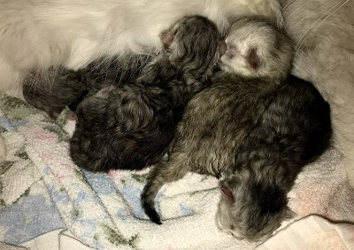
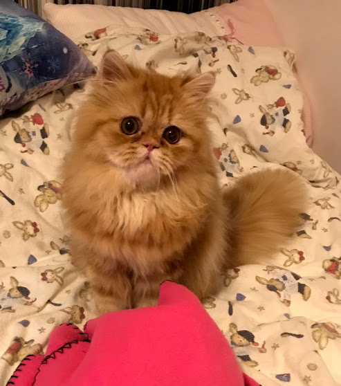
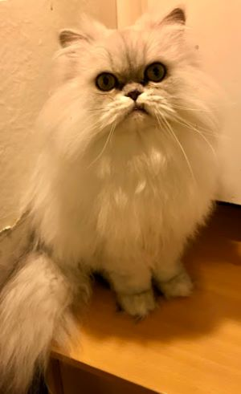
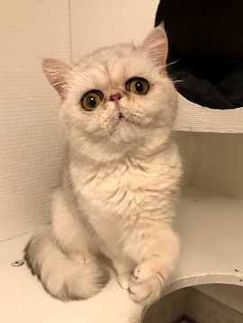

| Till salu / For sale |
|  |
| Ingen kull planerad just nu No kittens are planned for the moment |
|
| Chase S* Bergudden's Chubby Chase PER ds 2262 Född/Born: 8.7.2018 Far/Sire: S* Bergudden's Tailor-Made Toretto Mor/Dame: S* Bergudden's Sparkling Sonia kastrerad/neutered till salu / for sale |  |
|
| Måns S* Bergudden's Måns PER ns 11 Född/Born: 23.3.2018 Far/Sire: S* Bergudden's Tailor-Made Toretto Mor/Dame: S* Bergudden's Lively Lacie fler bilder kan fås via messenger eller sms Måns är kastrerad till salu / for sale |  |
|
| Stacey S* Bergudden's Stacey EXO ns 11 Född/Born: 30.10.2018 Far/Sire: S* Kesanacat's Perfect Love Mor/Dame: S* Bergudden's Awesome Arya till salu / for sale |  |
Vid försäljning är våra katter Vi säljer inte på avbetalning Kontakta mig gärna via sms om ni vill veta något, 070 - 77 313 93. Please send a textmessage if you wish to know more +46 70 77 31393
|